The useR! Conference 2015
June 30 - July 3, 2015
Aalborg, Denmark

Invited Talks
We are excited to announce the invited speakers useR! 2015 in Aalborg! The line-up consists of Thomas Lumley (R Core, Survey), Adrian Baddeley (Spatstat), Steffen Lauritzen (gRaphical models), Di Cook (GGobi), Romain François (R/C++) and Susan Holmes (phyloseq).


Tutorials
The following 16 tutorials will be offered free of charge to the useR! 2015 participants on Tutorial Tuesday, June 30. The duration of each tutorial will be 3 hours. There will 8 tutorials in the morning session and 8 in the afternoon session.List of tutorials
- Analysis and Visualization of Large Complex Data with Tessera (Ryan Hafen and Stephen Elston)
- Applied Machine Learning and Efficient Model Selection with mlr (Bernd Bischl and Michel Lang)
- Applied Spatial Data Analysis with R (Virgilio Gómez Rubio)
- Bayesian Networks and Graphical Models with R (Søren Højsgaard and Therese Graversen)
- Bioconductor for high-throughput sequence analysis (Martin Morgan)
- Data manipulation with dplyr (Hadley Wickham)
- Efficient statistical consulting using R Workflow for data analysis projects (Peter Baker)
- Getting to Know Grid Graphics (Paul Murrell)
- Handling missing values with a special focus on the use of principal components methods (Julie Josse and François Husson)
- Introduction to Bayesian Data Analysis with R (Rasmus Bååth)
- RHadoop (Andrie de Vries and Simon Field)
- Rocker: Using R on Docker (Dirk Eddelbuettel)
- spatstat: An R package for analysing spatial point patterns (Adrian Baddeley and Ege Rubak)
- Statistical analysis of network data (Gabor Csardi)
- Testing R Code (Richard J. Cotton)
- Using Pandoc's markdown with R (Gergely Daróczi)
Sponsors
The execution of useR! 2015 would not have been possible without the strong commitment and generous support from our sponsors.Platinum
 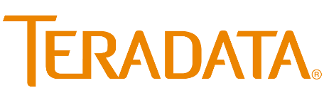
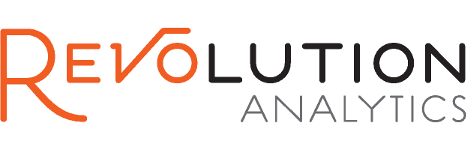
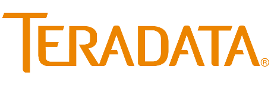
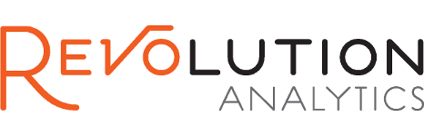
Gold
 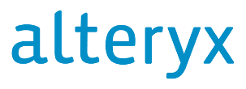
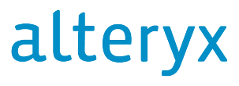
 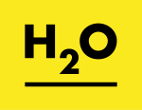
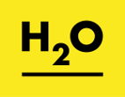
Silver

 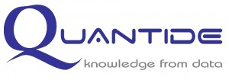
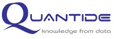
Bronze
 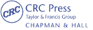
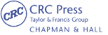
Media
Abstract submission
The useR! 2015 abstract submission is now open!
We encourage R enthusiast, users, developers and the like to submit an abstract for useR! 2015 in Aalborg. The deadline for submitting abstracts is April 10 and an expected date of notification by May 1, 2015.
The abstracts should be limited to 200 words and describe the content of the contributed material. In addition, 5 keywords to be used in the review phase must be supplied. Hence, these keywords should capture the main focus of the presentation.
Submit an abstract:
Write an email to user2015@math.aau.dk with the subject "Ticket" in order to receive a one-time ticket to access the submission system. We use this approach to avoid scam, hence the message of your email should indicate - and convince us - that you are serious about submitting an abstract for the useR! 2015 conference.
After this (note "human" delay etc), you will receive an email containing the link to the submission system and your personal ticket. After submitting your abstract it is not possible to login using the same ticket or change your submission.
At useR! 2015 four types of sessions will be organised:
- useR! Kaleidoscope: These sessions will give a broad overview of the many different applications of R and should appeal to a wide audience.
- useR! Focus Sessions: These sessions will focus on topics of special interest and may be more technical.
- useR! Lightning Talks: These sessions, with oral presentations of 5 minutes, provide a platform for participants to speak on any R-related topic and should particularly appeal to R newbies.
- useR! Poster Session: Shorter and less novel presentations of the usage of R to be enjoyed with drinks and light snacks.
Note that Kaleidoscope and Focus contributed talks, will be scheduled for 17 minutes, followed by 3 minutes discussion. Presenters of Lightning talks have 5 minutes at their disposal to present 15 slides (exactly 20 seconds per slide). A variation of the pecha kucha and ignite formats will be used.
Conference overview
The table below gives a quick overview of the conference format, various sessions, breaks and social events. More details will be added when the abstract submission and decisions are made. Note that the conference finish midday Friday.| Time | Tuesday | Wednesday | Thursday | Friday |
|---|---|---|---|---|
| 09.00-10.00 | Morning Tutorials incl. coffee and lunch breaks |
Invited talk | Invited talk | Invited talk |
| 10.00-10.30 | Coffee break (with fruit) | |||
| 10.30-12.00 | Contributed talks | Contributed talks | Sponsor talks | |
| 12.00-13.00 | Lunch break (standing buffet) | Invited talk | ||
| 13.00-14.30 | Afternoon Tutorials incl. coffee break |
Contributed talks | Contributed talks | Grab 'n go lunch |
| 14.30-15.00 | Coffee break (with cake) | |||
| 15.00-16.00 | Invited talk | Invited talk | ||
| 16.00-17.30 | Contributed talks | Contributed talks | ||
| Evening | Welcome reception | Poster session and mixer | Conference dinner | |
Programme Committee
The programme committee for useR! 2015 consists of the following members:Important Dates
| Event | Date | ||
|---|---|---|---|
| Registration open | 03 | December | 2014 |
| Abstract Submissions Deadline | 10 | April | 2015 |
| Notification of Acceptance | 01 | May | 2015 |
| Early Registration Deadline | 10 | May | 2015 |
| Registration Deadline | 01 | June | 2015 |
| Late registration deadline | 21 | June | 2015 |
| Tutorials | 30 | June | 2015 |
| Conference Start | 01 | July | 2015 |
| Conference End | 03 | July | 2015 |
Registration
The registration for useR! 2015 is now open: useR! 2015 registration page!
| Student | Academic | Industry | |
|---|---|---|---|
| Early (before 10 May 2015) | €125 | €275 | €425 |
| Regular (before 01 June 2015) | €150 | €325 | €475 |
| Late (before 21 June 2015) | €200 | €375 | €525 |
| On-Site | €250 | €525 | €675 |
The registration page allows for both purchasing conference tickets as well as (optional) accommodation at pre-booked hotels within a single order. Tutorials are included with the conference ticket!
Register! The registration is made through our conference partner Visit Aalborg using this link: useR! 2015 registration page.For any technical/practical questions and alternations regarding the registration, please use the contact information provided on the first page of the registration site.
Maillist
We have set up an maillist for useR! 2015 to post news and updates.In order to subscribe, send an (possibly empty) email to user2015-subscribe@lists.aau.dk or go to https://lists.aau.dk/listinfo/user2015.
To unsubscribe, send an (possibly empty) email to user2015-unsubscribe@lists.aau.dk or go to https://lists.aau.dk/listinfo/user2015.
What's on
The following cultural events takes place in and around Aalborg before, during and after useR! 2015:- Sting concert, June 30: Tickets.
- 4th of July: The biggest celebration of the US Independence Day outside USA. Events in Rebild Bakker and Aalborg.
About the Conference
The annual useR! international R User conference is the main meeting of the R user and developer community. Its program consists of both invited and user-contributed presentations:
- The invited keynote lectures cover a broad spectrum of topics ranging from technical and R-related computing issues to general statistical topics of current interest.
- The user-contributed presentations are submitted as abstracts prior to the conference and may be related to (virtually) any R-related topic. The presentations are typically organised in sessions of either broad or special interest, which also comprise a "free" discussion format. Such a discussion format not only provides a forum for software demonstrations and detailed discussions but also supports the self-organisation of the respective communities.
Dates
- June 30, 2015 (Tues): Tutorials
- July 1-3, 2015 (Wed-Fri): Conference
Organising committee
In 2015, the conference will be held at Aalborg Congress & Culture Centre in Aalborg, Denmark. The conference is being organised with support from the Department of Mathematical Sciences. The organising committee consists of:
- Torben Tvedebrink (chair) - Department of Mathematical Sciences.
- Søren Højsgaard - Department of Mathematical Sciences.
- Mikkel Meyer Andersen - Department of Mathematical Sciences.
- Poul Svante Eriksen - Department of Mathematical Sciences.
- Ege Rubak - Department of Mathematical Sciences.
- Mateusz 'Matt' Dziubinski - Department of Mathematical Sciences.
- Kasper Berthelsen - Novo Nordisk.
- Claus Dethlefsen - Novo Nordisk.
- Maria Rodrigo-Domingo - Aalborg University Hospital.
- Rikke Nørmark Mortensen - Department of Health Science and Technology.
- Anders Ellern Bilgrau - Department of Mathematical Sciences.
Questions? Kindly contact user2015 [at] math.aau.dk.
Accommodation
General information
Aalborg offers a wide range of accommodation facilities including options for students - 1,500 hotel rooms within comfortable walking distance of Aalborg Congress & Culture Centre. One hotel very close to the congress centre and there is a fine mix of international hotels and charming privately owned hotels.
Special conference rate
Please note that we as local organisers have selected the most convenient and best hotels in advance for you to choose from. Booking through the registration link (a link will appear in due time) or through e-mail (see below) to VisitAalborg you will benefit from special rates and, at the same time, making sure that there is plenty of opportunity to network with your colleagues outside the conference programme.
Flexibility in your booking
It’s also worth noticing; that you will not be required to pay for hotel accommodation in advance, and that changes in the booking will even be accepted until 2 days prior to your arrival date. You can make your hotel reservation in connection with your registration for the useR! 2015. Doing this, you will benefit from the special conference rates.
Hotel reservation after registration
In case you have already registered and afterwards wish to make a hotel reservation, please feel free to contact us and we will help you do so – of course making sure that you will still benefit from the special conference rates.
Please contact us by phone or e-mail and inform us of your choice of hotel, date of arrival and departure, type of room, special requirements, etc. Payments are made directly to the hotel upon check out. As soon as we have made the reservation for you, we will send you a confirmation.
Contact information
Annike Seerup Hjort
VisitAalborg
Kjellerups Torv 5, level 13
9000 Aalborg
Denmark
Phone: +45 99 31 75 20
Directly: +45 99 31 75 23
Fax: +45 99 31 75 19
E-mail: ash@aalborg.dk
Hotels with pre-booked rooms
First Hotel Europa
First Hotel Europa offers 168 modern, air-conditioned rooms with free wireless internet access. The hotel is designed in the best Scandinavian tradition with clean lines and beautiful, light colours. While enjoying a location in the centre of the city, the hotel also neighbours the largest green spot of Aalborg - the beautiful Kildeparken. The hotel is attached to Aalborg Congress and Culture Centre and is located within comfortable walking distance of the railway station and the bus terminal. First Hotel Europa is located a short walk from the charming pedestrians’ streets which offers great shopping, cosy cafés, delightful entertainment, well-preserved buildings and modern architecture etc.
First Hotel Europa
Europa Plads 1
9000 Aalborg
Distance to Aalborg Congress and Culture Centre: 0 m
Distance to the airport: 6 km
Distance to train station: 300 m
Single room: DKK 845 // EUR 114
Double room: DKK 1045 // EUR 141
For more information on the hotel, please visit: First Hotel Europa
Hotel Chagall
Hotel Chagall is situated in the heart of Aalborg close to all of the city’s facilities, shops, historic landmarks, beautiful churches, etc. A 5-minute walk down the main road will take you to Aalborg Congress and Culture Centre where your meetings will take place. This intimate and cosy hotel has 78 spacious, light rooms decorated in modern Scandinavian style and is a relaxing, perfect place for the active business traveller – here you will find a rare sense of peace in a city hotel.
Hotel Chagall
Vesterbro 36
9000 Aalborg
Distance to Aalborg Congress and Culture Centre: 500 m
Distance to the airport: 6 km
Distance to train station: 500 m
Single room: DKK 695 // EUR 94
Double room: DKK 895 // EUR 120
For more information on the hotel, please visit: Hotel Chagall
Hotel CABINN Aalborg
Since October 2009, CABINN has welcomed guests at this modern economy-class hotel in the heart of Aalborg. CABINN’s next-door neighbour is Aalborg’s new shopping centre Friis. The hotel has 239 rooms, all with private bath and toilet as well as phone, TV and a free wireless Internet. Many of Aalborg’s excellent restaurants are only a 15-minute walk from the hotel, and a 5-minute walk will take you to the scenic waterfront and the two spectacular cultural centres Utzon Center and Nordkraft.
CABINN Aalborg
Fjordgade 20
9000 Aalborg
Distance to Aalborg Congress and Culture Centre: 1400 m
Distance to the airport: 6 km
Distance to train station: 1000 m
Single room from: DKK 565 // EUR 76
Double room from: DKK 765 // EUR 103
For more information on the hotel, please visit: CABINN AALBORG
Travel arrangements
By plane
Beautifully situated in Northern Denmark, Aalborg is well connected in several ways. With an excellent internal air, rail and road network, getting to Aalborg has never been easier. Visitors from abroad will usually either connect through one of the two daily 85-minute flights directly from Amsterdam Schiphol operated by KLM that is very well connected to 260 destinations worldwide.
AirFrance/KLM are the official carriers for
useR! 2015 in Aalborg. This means that participants
can get discounts when booking flights directly from
their website using the event id 23683AF. To
book flights please visit: KLM Global Meetings
website. Please download and keep this document
with you during your travels if booking tickets
through the Global Meetings
programme: Travel document.
Besides connecting through Amsterdam, international visitors can fly to Aalborg via Copenhagen Airport which has a virtual air bridge to Aalborg with more than 30 daily connections and a domestic flight time of only 35 minutes.
Lufthansa also has two daily connections through Frankfurt and Turkish Airlines have a route to/from Istanbul three times weekly. Moreover Aalborg Airport has scheduled airline connections with Oslo in Norway, Helsinki in Finland, London in England, Malaga in Spain and the Faroe Islands.
For further information about flights to and from Aalborg see Aalborg Airport's website: Aalborg Airport.
Links to airlines: KLM, Scandinavian Airlines (SAS), Norwegian, Turkish Airlines, Lufthansa.
Arriving at the airport
Arriving by plane you will find yourself at Aalborg Airport, only 10 minutes by bus and taxi from the city centre. Bus no. 2 leaves from the airport two times per hour and takes you to the city centre. The bus fare is DKK 22 per person, cash only. Taxis are outside the terminal and will take you directly to your hotel. Price for taxi ride is DKK 180-300 depending on hotel destination. Contact details: +45 9810 1010.
- To and from Aalborg Airport, bus no. 2 takes you to the city centre in 10 mins
- To and from your hotel as well as in the city, (see Rejseplanen or Google Maps for bus schedules)
- To call a cab +45 98101010 (Aalborg Taxi)
Social Programme
The social programme of useR! 2015 includes:
The welcome reception will be hosted by the city of Aalborg's mayor's office. This is your opportunity to mingle with with be a very broad international representation of R users of all stripes and sizes and to meet the conference speakers and members of the Program Committee and Organising Committee for one-on-one conversation. There is no additional charge for this reception.
The poster session will take place in the conference venue on the first day of the conference. You can discuss the posters while enjoying beer, wine and other beverages accompanied with light snacks.
The conference dinner will take place in Rold Forest (the second largest forest in Denmark) under the theme "Robbers in Rold" with competitive games, such as long sawing, axe hurling and archery, prior to a delicious robbers' banquet and good drinks. This event has an additional charge for each attendee in addition to the Conference registration fees, but is open to family members and children.